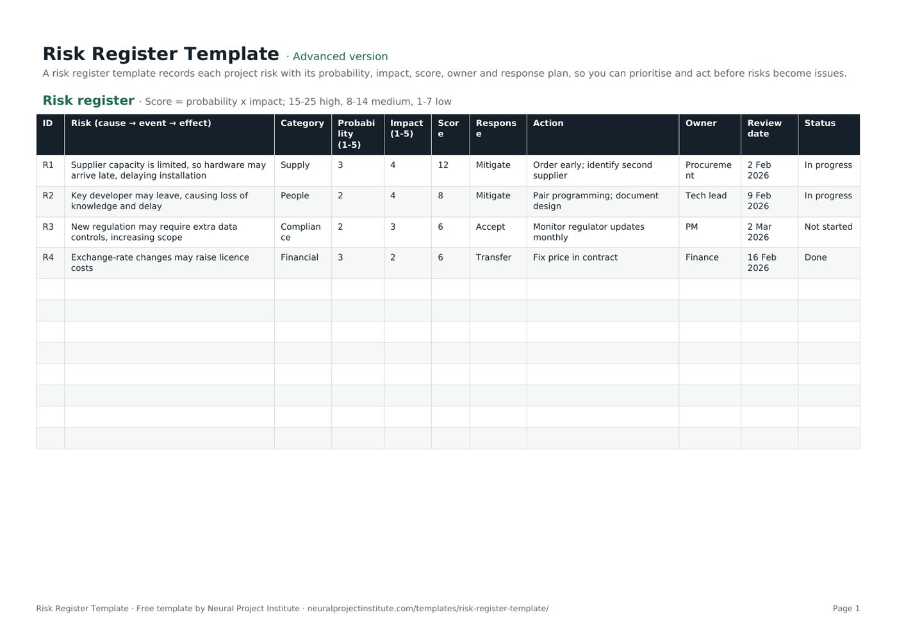

Free Risk Register Template with Risk Score (Excel, Sheets, PDF)
This free risk register template records each project risk with its probability, impact, automatically calculated score, response, action, owner, review date and status, so you can see your biggest risks at a glance and act before they become issues. Download it in Google Sheets, Excel or PDF at beginner, advanced or expert level, with no sign-up.

Key takeaways
- A risk register is the single list of a project's identified risks, how serious each one is, who owns it and what is being done about it.
- The template calculates each risk score as probability x impact (1 to 25) and bands it: 15 to 25 high, 8 to 14 medium, 1 to 7 low.
- Write every risk as cause, event and effect so the response targets the right thing.
- Every risk needs one named owner, a specific action and a review date.
- A register only works if you review it regularly; update scores, close risks and move risks that have happened to the issue log.
Free download · no sign-up
Get the risk register template
Pick your level and format: Google Sheets, Excel or a print-ready PDF. Spreadsheets include dropdowns, formulas and sample rows you can overwrite.
What is a risk register?
A risk register is a log of a project's identified risks. For each risk it records a description, its probability and impact, an overall score, the chosen response, the actions planned, a named owner and the current status. It is the working tool of risk management: the place where risks are tracked from identification to closure.
A risk is an uncertain event that, if it happens, would affect your objectives. An issue is something that is already happening. The register deals with risks; when a risk occurs it becomes an issue and moves to your issue log.
The project manager usually maintains the register, but each risk has its own owner. PRINCE2 goes further and separates the risk owner, who is accountable for managing a risk, from the risk actionee, who carries out a specific response. How you identify, assess and review risks is described in your risk management approach; the register is where the results live.
For the full process, see our risk register guide.
What is in this risk register template
The template has one tab, Risk register, with four sample risks that you overwrite with your own. Here is a live preview of the advanced version:
| ID | Risk (cause → event → effect) | Category | Probability (1-5) | Impact (1-5) | Score | Response | Action | Owner | Review date | Status |
|---|---|---|---|---|---|---|---|---|---|---|
| R1 | Supplier capacity is limited, so hardware may arrive late, delaying installation | Supply | 3 | 4 | 12 | Mitigate | Order early; identify second supplier | Procurement | 2 Feb 2026 | In progress |
| R2 | Key developer may leave, causing loss of knowledge and delay | People | 2 | 4 | 8 | Mitigate | Pair programming; document design | Tech lead | 9 Feb 2026 | In progress |
| R3 | New regulation may require extra data controls, increasing scope | Compliance | 2 | 3 | 6 | Accept | Monitor regulator updates monthly | PM | 2 Mar 2026 | Not started |
| R4 | Exchange-rate changes may raise licence costs | Financial | 3 | 2 | 6 | Transfer | Fix price in contract | Finance | 16 Feb 2026 | Done |
Sample rows are examples: replace them with your own.
- Risk register: ID, Risk (cause → event → effect), Category, Probability (1-5), Impact (1-5), Score, Response, Action, Owner, Review date, Status
Columns, dropdowns and formulas
- ID: a short unique reference (R1, R2) used in reports and meetings.
- Risk (cause → event → effect): the risk statement, written in three parts (see below).
- Category: a dropdown with Technical, Supply, People, Financial, Compliance, Schedule and External.
- Probability (1-5) and Impact (1-5): your ratings on a five-point scale.
- Score: calculated automatically as probability x impact, from 1 to 25.
- Response: a dropdown with Avoid, Mitigate, Transfer and Accept for threats, and Exploit, Enhance and Share for opportunities.
- Action, Owner and Review date: what will be done, who is accountable and when the risk will next be checked.
- Status: a dropdown with Not started, In progress, On hold, Blocked and Done.
Beginner, advanced and expert versions
| Version | What you get | Best for |
|---|---|---|
| Beginner | One tab with seven columns: ID, Risk, Probability, Impact, Score, Owner and Status | Small projects and first-time registers |
| Advanced | All eleven columns, the Category, Response and Status dropdowns and the score formula | Most projects |
| Expert | The advanced register plus an Instructions tab, a Dashboard that counts risks by category, owner and status, status colours (Done green, In progress amber, Blocked red) and a Revision history tab | Projects that report risk to a board, sponsor or PMO |
Every spreadsheet version has a frozen header row and filters, so you can sort by score or filter by owner. The PDF is a print-ready copy for risk workshops.
How to write a good risk description
A vague description such as "budget" or "resources" cannot be scored or managed. The template's risk column prompts you to write each risk in three parts: the cause (a fact or condition that exists now), the event (the uncertain thing that might happen) and the effect (the impact on your objectives).
| Poor description | Better: cause → event → effect |
|---|---|
| Supplier problems | Our supplier has limited capacity, so hardware may arrive late, delaying installation by up to three weeks |
| Staff turnover | Only one developer knows the integration code, so if they leave we may lose knowledge and delay testing |
| Regulation | A new data regulation is under consultation, so we may need extra controls, increasing scope and cost |
Splitting the statement this way also tells you where to act. Responses aimed at the cause reduce probability; responses aimed at the effect reduce impact. Our guide to project risk explains risk types and sources in more depth.
How to fill in the risk register template
- Identify risks with the team. Run a short workshop using your scope, schedule, cost estimate, assumptions and lessons learned from similar projects. Include key stakeholders; they often see risks the team does not.
- Write each risk as cause → event → effect and give it an ID and category.
- Rate probability and impact from 1 to 5 using agreed definitions (see the scale below). The score calculates automatically.
- Sort by score. Focus first on high scores (15 to 25), then medium (8 to 14).
- Choose a response from the dropdown and describe the specific action in the Action column.
- Assign one owner for each risk and set a review date.
- Track status as actions progress, and re-score the risk once actions are complete to see the residual risk.
- Review the register regularly and report the top risks to your sponsor.
Spreadsheet tips
- Copy the Score formula into new rows. The formula is filled in for the sample rows; drag it down from the row above when you add a risk.
- Sort by Score, largest first, before every review so the most serious risks are discussed first.
- Filter by Owner to send each owner their own list of risks and actions.
- Add columns if your organisation needs them, for example proximity (when the risk could occur), risk trigger or cost impact. Keep the core columns so scoring and filtering still work.
Scoring risks with probability and impact
The template uses a simple qualitative method: rate probability and impact from 1 to 5 and multiply them. What matters most is that everyone uses the same definitions. The scale below is our suggested starting point; adjust the thresholds to the size of your project and your organisation's risk appetite.
| Rating | Probability | Impact (example thresholds) |
|---|---|---|
| 1: Very low | Under 10% chance | Negligible: under 1% of budget or a few days' delay |
| 2: Low | 10% to 30% | Minor: absorbed within the plan |
| 3: Medium | 30% to 50% | Moderate: uses contingency or delays a milestone |
| 4: High | 50% to 70% | Major: affects the end date, budget or a key deliverable |
| 5: Very high | Over 70% | Severe: threatens the project's objectives or business case |
The template bands the score as high (15 to 25), medium (8 to 14) and low (1 to 7). Plotted on a five-by-five grid, these bands form the familiar probability and impact matrix.
Qualitative scoring is enough for most projects. For large or high-value projects, add quantitative analysis: sensitivity analysis shows which risks move the outcome most, and Monte Carlo simulation estimates the probability of meeting a date or budget. Where data is thin, structured expert judgment is a valid input.
Choosing a risk response
The Response dropdown follows the strategies set out in PMI's PMBOK Guide. Threats and opportunities have different responses:
| Response | Applies to | What it means | Example |
|---|---|---|---|
| Avoid | Threat | Change the plan to remove the threat | Drop an unproven technology from scope |
| Mitigate | Threat | Reduce probability or impact | Order hardware early and qualify a second supplier |
| Transfer | Threat | Shift the impact to a third party | Fixed-price contract or insurance |
| Accept | Threat or opportunity | Take no action now; monitor, and hold contingency if needed | Monitor regulator updates monthly |
| Exploit | Opportunity | Make sure the opportunity happens | Assign your best developer to secure an early release |
| Enhance | Opportunity | Increase its probability or benefit | Add resources to finish before a price rise |
| Share | Opportunity | Partner with someone better placed to capture it | Joint venture with a specialist supplier |
The PMBOK Guide 6th edition added a further response, escalate, for risks that are outside the project's authority and belong to the programme, portfolio or organisation. It is not in the dropdown; add it to the list if your organisation uses it, or record escalated risks with the receiving owner in the Owner column.
For accepted and partly mitigated risks, set aside a contingency reserve and agree fallback actions in your contingency plan. Cost-related risks should feed the contingency line in your project cost estimate template.
Risk register example
The four sample risks in the template show a typical mix of categories, scores and responses:
| ID | Risk | P x I | Score | Response and action | Owner | Status |
|---|---|---|---|---|---|---|
| R1 | Limited supplier capacity may delay hardware and installation | 3 x 4 | 12 (medium) | Mitigate: order early, identify a second supplier | Procurement | In progress |
| R2 | A key developer may leave, causing knowledge loss and delay | 2 x 4 | 8 (medium) | Mitigate: pair programming, document the design | Tech lead | In progress |
| R3 | New regulation may require extra data controls, increasing scope | 2 x 3 | 6 (low) | Accept: monitor regulator updates monthly | PM | Not started |
| R4 | Exchange-rate changes may raise licence costs | 3 x 2 | 6 (low) | Transfer: fix the price in the contract | Finance | Done |
- R1 has the highest score, so it is discussed first at each review.
- R2 is a people risk with a cause-focused response: spreading knowledge reduces the effect of anyone leaving.
- R3 is accepted because the regulation is still under consultation; the monthly check acts as its trigger.
- R4's action is complete. Once the contract is signed, re-score it and close it if nothing remains.
How to keep the register up to date
A register written at the start of a project and never opened again gives false comfort. Build reviews into the project rhythm:
- Review it regularly. Every two weeks suits many projects, and always at phase gates and after major changes. Agile teams often review risks in sprint planning or retrospectives.
- Re-score after actions. When an action is done, update probability and impact to show the residual risk.
- Look for secondary risks. A response can create new risks; add them as new rows.
- Move risks that occur to the issue log and close them in the register with a note.
- Close risks that have passed, for example when the activity is complete. Keep them in the file, filtered out, as a record.
- Report the top risks. Include the five to ten highest scores in your project status report and escalate through your project governance route when a risk exceeds tolerance.
Risk responses that change scope, cost or schedule should go through change control using a change request template.
Common risk register mistakes
- Listing issues as risks. If it has already happened, it belongs in the issue log.
- Vague descriptions. "Resources" cannot be scored or managed; use cause, event and effect.
- Owners who are teams or committees. Name one person.
- Actions without dates. "Monitor" is not an action unless you say how and when.
- Inconsistent scoring. Agree the scale before the workshop, not during it.
- Ignoring opportunities. Positive risks can save time and money if you plan for them.
- Too many risks. A register of 200 low risks hides the ten that matter; focus effort on the top ten.
- Not linking to reserves. Accepted risks need contingency in the budget and schedule.
Risk register vs RAID log vs issue log
| Document | What it tracks | Use it when |
|---|---|---|
| Risk register | Uncertain future events (threats and opportunities) | You need detailed scoring, responses and owners for risks |
| Issue log | Problems that are happening now | You need to resolve current problems and track actions |
| RAID log | Risks, assumptions, issues and dependencies in one place | A smaller project wants one combined control log |
Many projects use a dedicated risk register alongside an issue log; others use a combined RAID log template. Choose one approach and stick to it so nothing is tracked twice.
Spreadsheet or software?
A spreadsheet register is quick to set up, easy to share and enough for most single projects. As the number of projects, owners and reviews grows, many teams move their register into a project management tool so risks link to tasks, owners get reminders and dashboards update automatically. If you are at that point, compare options in our project management software rankings.
Related templates and guides
If a risk has already turned into a problem, analyse it with a root cause analysis template or a fishbone diagram, and capture what you learned in a lessons learned template. Record top-level risks in your project charter at the start of the project.
 RAID Log TemplateFree RAID log template to track project Risks, Assumptions, Issues and Dependencies with…Beginner · Advanced · Expert
RAID Log TemplateFree RAID log template to track project Risks, Assumptions, Issues and Dependencies with…Beginner · Advanced · Expert Change Request TemplateFree change request template and change control log: description, reason, impact on…Beginner · Advanced · Expert
Change Request TemplateFree change request template and change control log: description, reason, impact on…Beginner · Advanced · Expert Root Cause Analysis (5 Whys) TemplateFree root cause analysis template using the 5 whys: problem statement, why chain, root…Beginner · Advanced · Expert
Root Cause Analysis (5 Whys) TemplateFree root cause analysis template using the 5 whys: problem statement, why chain, root…Beginner · Advanced · Expert Project Plan TemplateFree project plan template with goals, scope, deliverables, tasks, owners, dates and…Beginner · Advanced · Expert
Project Plan TemplateFree project plan template with goals, scope, deliverables, tasks, owners, dates and…Beginner · Advanced · Expert Project Charter TemplateFree project charter template covering purpose, objectives, scope, milestones, budget,…Beginner · Advanced · Expert
Project Charter TemplateFree project charter template covering purpose, objectives, scope, milestones, budget,…Beginner · Advanced · ExpertFrequently asked questions
What is a risk register template?
A risk register template is a ready-made log for recording project risks with their description, category, probability, impact, score, response, action, owner, review date and status.
Is this risk register template free?
Yes. The risk register template is free to download in Google Sheets, Excel and PDF, at beginner, advanced and expert level, with no sign-up.
What should a risk register include?
At minimum: an ID, a risk description, probability, impact, a score, a response, an action, an owner, a review date and a status. Many organisations add a category, proximity, triggers and residual score.
How is the risk score calculated in the template?
Risk score = probability x impact, each rated from 1 to 5, giving a score from 1 to 25. The template bands scores as high (15 to 25), medium (8 to 14) and low (1 to 7).
How do I create a risk register?
Identify risks with your team, write each as cause, event and effect, score probability and impact, choose a response and action, assign an owner and review date, then review the register regularly.
Who is responsible for the risk register?
The project manager usually maintains the register and runs reviews. Each risk has a named owner who is accountable for managing it; in PRINCE2, an actionee may carry out specific responses.
How often should a risk register be reviewed?
Every two weeks suits many projects, plus at each phase gate and after any major change. High-risk or fast-moving projects may review weekly.
What are the risk response strategies?
For threats: avoid, mitigate, transfer and accept. For opportunities: exploit, enhance, share and accept. The PMBOK Guide 6th edition also added escalate for risks outside the project's authority.
What is the difference between a risk register and an issue log?
A risk register tracks events that might happen; an issue log tracks problems that are already happening. When a risk occurs, it moves to the issue log.
What is the difference between a risk register and a RAID log?
A risk register tracks risks only, in detail. A RAID log template combines risks, assumptions, issues and dependencies in one log.
Can I use this as a risk assessment template in Excel?
Yes. The probability, impact and score columns make it a qualitative risk assessment, and sorting by score prioritises the results.
Should a risk register include opportunities?
Yes. Opportunities are positive risks. Record them in the same register and use the exploit, enhance, share or accept responses.
What is the difference between the beginner, advanced and expert risk register template?
The beginner version has seven essential columns on one tab. The advanced version has all eleven columns, the dropdowns and the score formula. The expert version adds instructions, a dashboard that counts risks by category, owner and status, status colours and a revision history.